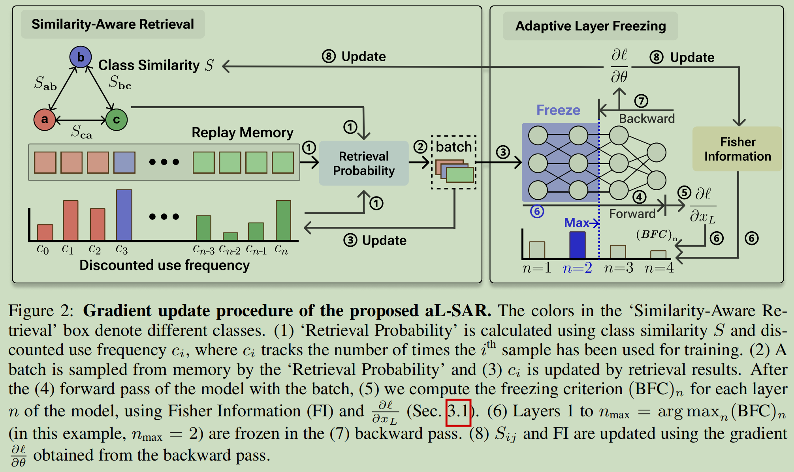
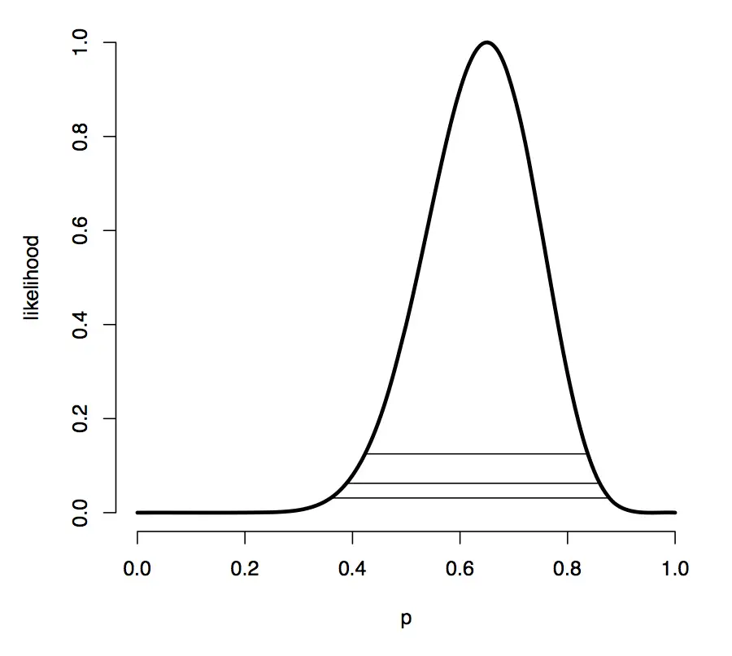
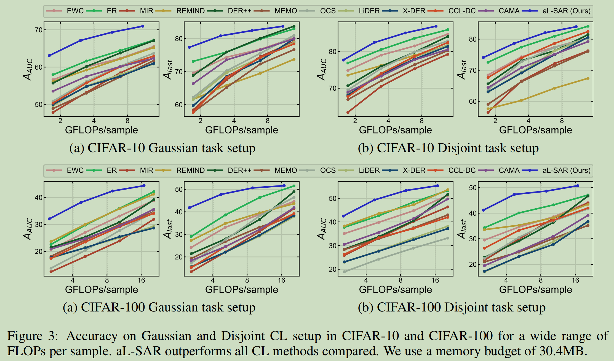
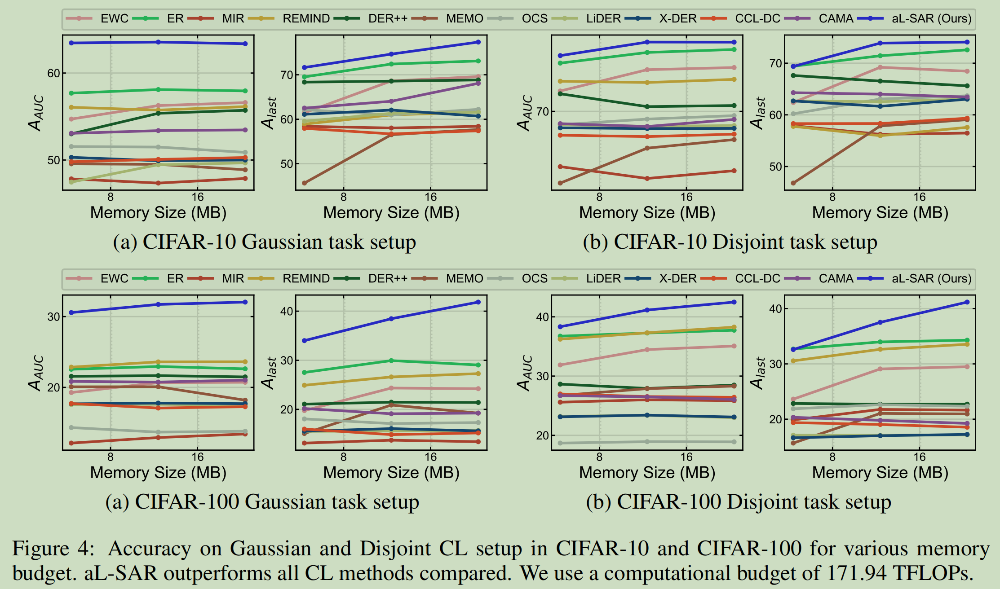
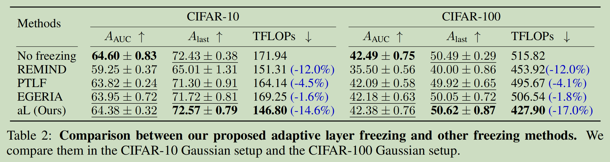
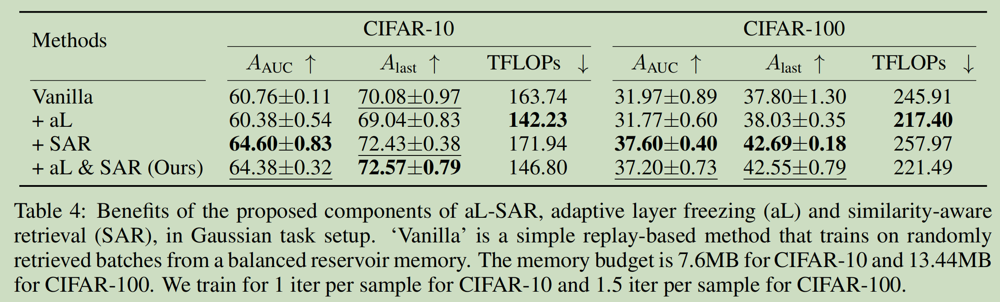

标题：Budgeted Online Continual Learning by Adaptive Layer Freezing and Frequency-based Sampling
期刊：International Conference on Learning Representations (ICLR spotlight)
发表时间：2025
链接：https://arxiv.org/pdf/2410.15143
概述
本文关注的领域是线上持续学习 (online continual learning), 尤其是分类任务上的高效微调策略。现有的 CL 方法中一类常用策略是维护一个 replay memory, 并在线上学习过程中从中采样加入训练样本。出于模拟线上持续学习资源受限场景以及公平性的考虑，现有方法往往都对新样本采用一个 epoch 训练，并且会比较 replay memory 的内存。但是本文指出，尽管都是一个 epoch; 但是不同方法在 epoch 内的计算量相差很大；即使都比较 replay memory 的内存，但没比较各方法使用的额外模型或 logits 等的内存，从而依旧会导致不公平。
本文首先引入了一种新的比较指标：每个样本对应的 FLOP(floating point operations), 并主张比较内存时考虑使用的全部内存。其次，提出了一种自适应的层冻结策略以保证在最少的计算量下获得最大信息量。最后，提出了一种相似度感知的基于使用频率的采样策略提高样本的信息量效率，以弥补冻结导致的信息量减少。下图是方法概述图。

信息获取指标与自适应冻结策略
在 Offline 微调的情况下，如果保证使用的数据都是 i.i.d. 的，那么在确保一些层已经收敛后就可以在之后的训练中永久冻结这些层（例如用更新幅度为指标）。然而, Online CL 中往往无法保证获得的每个 batch 数据都是 i.i.d. 的，因此无法简单这样做。
本文使用的冻结策略是，用 Fisher 信息量为表征，对于每个输入的 batch, 冻结从第 1 层开始的 $n$ 层，其中 $n$ 是自适应的。其思路以及方法如下。
设模型的总层数为 $L$, 对一个 batch, 设模型获得的新信息量为 $I$, 消耗的计算量为 $C$, 我们试图最大化单位计算量所期望获得的最大信息 $I/C$. 我们试图寻找 $n_{\max} = \arg\max_{n}(I/C)_n \text{ for } n\in[1,L]$, 即冻结前多少层能能达到信息量与计算量的最优平衡。
我们进一步将 $(I/C)_n$ 分解为：
其中 mb 为表示使用的 mini-batch. $(I/\text{mb})_n$ 表示冻结前 $n$ 层时一个 batch 模型获得的信息量, $\text{mb}/C$ 表示单位计算量下完成的 batch 数量。
单个 batch 模型获得的信息量 $(I/\text{mb})_n$
这段很有意思，我也不保证我写的绝对正确。但是我按照我的理解梳理一下。
首先回顾一下 Fisher 信息量。考虑随机变量 $X$, 其概率依赖于参数 $\theta$. 令 $f(X; \theta)$ 为参数为 $\theta$ 的随机变量 $X$ 的概率密度函数。那么 Fisher 信息量是一个 $\theta$ 的函数，描述对于一个固定的 $\theta$, $X$ 提供的关于 $\theta$ 的信息量，即我们有多容易根据采得的 $X$ 样本估计出 $\theta$ 的真实值。如果 $f$ 在局部随着 $\theta$ 的变化而很陡峭，那么 Fisher 信息量很大；如果变化很平缓，那么 Fisher 信息量很小。
举例而言，考虑抛硬币的伯努利分布, $p(X=1) = p$, $p(X=0) = 1-p$. 那么算得的 Fisher 信息量为 $I(p)=\frac{1}{p(1-p)}$. 当 $p≈0.5$ 时, Fisher 信息量很大，即此时数据对 $p$ 的敏感性很高。那么只要抛几次硬币就可以估计出 $p$ 的值；而如果 $p\approx 0$, 那么数据就对 $p$ 很不敏感。即当几乎每次硬币都为正面时，我们很难确定 $p=0.01$ 还是 $p=0.02$.
考虑最大化对数似然的情景，假设我们有数据 $X_1, \dots, X_n$, 那么可以求 MLE, 即令 $\frac{\partial}{\partial\theta}\sum_{i=1}^{n}\log f(X_i;\theta) = 0$. 我们记 $\frac{\partial}{\partial\theta}\log f(X;\theta)$ 为分数 $S(X;\theta)$ (score function). 其在一定条件下（包括单不限于 $f(X;\theta)$ 可导）满足下式：
这个公式意味着分数不会系统性地存在偏向。
一维情形下, Fisher 信息量定义为分数 $S$ 的二阶矩，即：
结合公式 (2), 容易得：
可知 $\mathcal{I}(\theta) \geq 0$, Fisher 信息量大的随机变量意味着分数的绝对值通常很高。Fisher 信息量不是随机变量 $X$ 的特定观测的函数，因为其已被平均化。另外，如果 $f(X;\theta)$ 是二阶可微的，那么有：
其中由于
因此有
如果我们关心的是真实的 $\theta$ 值，那么可以发现，当 Fisher 信息量大的时候等价于局部的分数二阶导数很小，即似然分布在其附近为一个峰，从而参数估计能力好。反而反之。

另外由于 Cramer-Rao 定理，有 $\text{Var}(\hat{\theta})\geq \frac{1}{\mathcal{I}(\theta)}$, 从而估计 $\theta$ 的精度受到似然函数的 Fisher 信息量的限制。
此外，给定 $N\times 1$ 的参数向量 $\boldsymbol{\theta} = [\theta_1, \dots, \theta_N]^T$, 此时可以得到 $N\times N$ 的 Fisher 信息矩阵：
Fisher 信息矩阵是一个半正定矩阵，在某些条件下，其可以写为如下形式：
回到原题。记模型所有参数的 Fisher 信息矩阵为 $F(\theta)$, 第 $i$ 层参数的 Fisher 信息矩阵为 $F(\theta_i)$. 用 Fisher 矩阵描述信息获得量有很多方式，但是非对角项需要求 Hessian 矩阵（公式 (9), 不过即使使用形式上更简单的公式 (8), 计算开销也不小），因此文中使用最简单的 Fisher 信息矩阵的 trace 来作为信息量的一个一阶近似。考虑冻结前 $n$ 层时，单个 batch 对模型的信息量的估计公式：
其中 $\mathcal{D}$ 是数据流, $z$ 是 batch, $l$ 是分数 $\log p_{\theta}(z)$. 这里只对 $n+1$ 到 $l$ 求和是因为冻结了前 $n$ 层。不过这个公式并不能直接用来估计信息量，因为我们无法对整个数据流对所有 batch 期望。其解决方法稍后给出。
单位计算量可计算 mini-batch 数 $(\text{mb}/I)_n$
我们考虑这一量的倒数 $(C/\text{mb})_n$, 即冻结前 $n$ 层时单个 mini-batch 所需要的计算量，其由公式 $(C/\text{mb})_n = \sum_{i==1}^{L}(\text{FF})_i + \sum_{i=n+1}^{L}(\text{BF})_i$ 给出，其中 $(\text{FF})_i$ 和 $\text{BF}_i$ 分别为第 $i$ 层前向传播和反向传播的计算量。于是：
结合公式 (9) 以及公式 (10), 就有：
一个比较理想的策略是冻结前 $n_{\text{max}} = \arg\max_{n}(I/C)_n$ 层。
线上持续学习的逐 batch 冻结策略
上面提到，公式 (10) 因为无法对整个数据流求期望的问题，并不能直接使用，尤其是 online CL 环境中每个 batch 的数据分布可能是不断变化的，直接用 batch 去估计这一期望也不现实。因此本文提出一种 batch freezing criterion (BFC) 方法来解决这一问题。
具体而言，在 BFC 决定对一个 batch 冻结多少层时，会比较两个指标：最后用第二点减去第一点就可以得到，模型通过冻结获得的收益。
- 冻结会导致当前模型对当前 batch 损失多少信息
- 利用冻结省下来的计算量，模型后续可以期望多获得多少信息
计算第一点的具体方式需要参考论文的 3.2 部分以及附录的 A.1 部分。首先需要计算对于这个 batch 特定的 Fisher 信息量：
我们将 $\sum_{i=1}^{n}\text{tr}(F_{z_t}(\theta_i))$ 作为这个 batch 因为冻结前 $n$ 层导致的信息量损失。但是如果我们目标是筛选样本，怎么可能在反向传播前就获得 $\frac{\partial l}{\partial\theta_i}$ 的信息呢？因此这个量也无法直接获得。文章用这个公式近似：
简单起见，计算倍率因子时只使用最后一层，这里 $\nabla_{x_L} l(z_t)$ 指一个 batch 数据对应的分数，对最后一层所有神经元求梯度得到的向量的平均。另外，因子中分母的期望以及 $F(\theta_t)$ 这个期望也都无法直接获得。对于前者，文章在每一轮用 EMA 进行更新；对于后者，由于反向传播过程中冻结了一些层，无法直接用 EMA 更新所有层的 Fisher 信息量，因此选择每隔一定轮次不冻结地训练一轮，并用 EMA 更新每一层的 Fisher 信息量（的对角元素）。
接下来是估计第二点，即这个 batch 通过冻结前 $n$ 层，可以让后续期望最多多获得多少信息，使用的公式比较好理解：
这里 $(I/C)_m$ 中使用的公式 (2) 中的 Fisher 信息量也用上面的方法近似。
最终结合第一、二点，得到的冻结前 $n$ 层收益的指标为
找到最大的 $\text{BFC}(z_t)_n$ 即可。
相似度感知的基于使用频率的采样策略
文章的思路是，近期使用频率越高的样本，模型对其掌握程度倾向于越高。因此定义折扣使用频率 $c_i$. 预定义一个折扣因子 $r$, 如果第 $i$ 个样本在某个 batch 中出现了 $n$ 次，那么 $t$ 轮后对应折扣使用频率为 $c_i = n\cdot r^t$.
但是要考虑到，如果模型学习了一个和这个样本相似的样本，那么就间接学习了这个样本；如果学习了一个和其不接近的样本，那么可能削弱了对该样本的掌握程度。因此文章基于类别相似度，进一步定义了有效掌握程度。
这一部分计算的具体方式需要参照文章的 3.2 部分以及 A.18 部分。定义两个类别的相似度的公式为：
从而，样本的有效使用频率为
其中 $C_y$ 表示类别 $y$ 所有样本出现折扣频率之和。公式 (17) 中的 $\cos(\nabla_{\theta}l(z))$ 表示输入样本 $z$ 时模型损失对模型参数 $\theta$ 的梯度，为维度与模型参数数量一致的向量。为了计算该值，文章在训练开始前随机选择 5% 的固定参数，后续在这些参数上计算梯度。和上面的方法一样，模型在每隔一定轮次不冻结地训练时用 EMA 更新公式 (17) 的相似度。
最终, replay memory 中每个样本被采样概率为
其中 $T$ 为温度超参数。
实验结果
文章分别在固定 FLOPs 和固定内存下比较了和其他 CL 方法的效果差异。本文效果明显更好。


并且相较于其他冻结策略，本文的效果损失也更小。

本文也做了 ablation.
